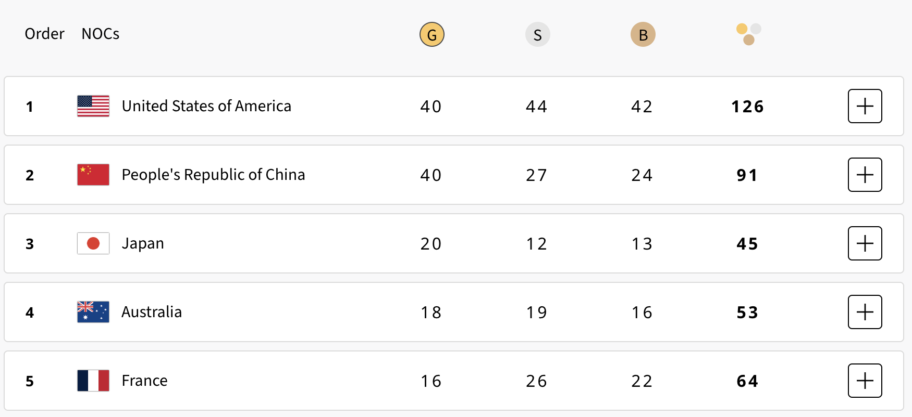
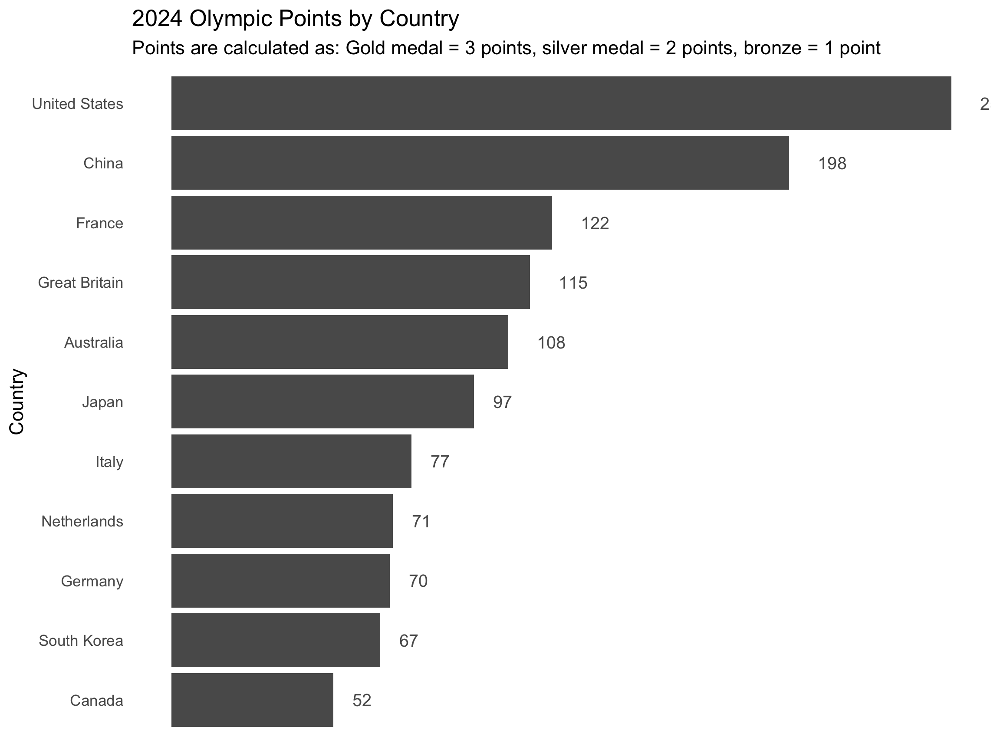

medals <- read_csv(here::here("data", "medals.csv"))Is There a Better Way to Measure Olympic Medal Performance?
Problem Description
The International Olympic Committee’s (IOC) current approach to measuring a country’s Olympic performance is tallying gold medals. While silver and bronze medals are recorded, they do not affect the final tally unless two countries are tied with gold medals.
It can be argued that there are two problems with the IOC’s current approach to measuring Olympic performance:
It is disrespectful to athletes who win silver and bronze medals. In most cases, athletes who won silver and bronze medals do not have their medals counted towards their country’s tally. An athlete might win a silver or bronze medal, but their achievement does not represent their country unless there is a tie for gold medals. One of the three values of the Olympics is Respect (Committee 2024). And, it can be argued that the IOC is insufficiently respecting their athletes by not factoring in who win silver and bronze medals.
Tallying only gold medals is not a comprehensive look at athletic excellence. A country may win numerous silver and bronze medals, but if they win no gold medals then they would be ranked as one of the weakest countries in the Olympic games. Of the 184 countries who competed in the 2024 Olympic Games, 144 did not earn a gold medal. In other words, 78% of all countries who competed in the Olympics were not seriously considered in the final results. Along with Respect, another value of the Olympic games is Excellence. It can be argued that the IOC is not sufficiency measuring excellence by ignoring silver and bronze medal wins. Some countries, like the United States, report all medals earned in their news and media (Nicholas and Ryan 2024). But, this is not how the IOC tallies results.
Some have proposed other ways to rank country performance at the Olympics. Researchers Robert C Duncan and Andrew Parece published their own ranking method in the Journal of Sports Analytics that accounts for a country’s probability of winning a medal if populations were the same across countries (Nicholas and Ryan 2024). This approach was dubbed the “Duncan-Parece model”. Although this calculation is useful in considering population size, the primary limitation is that it may be difficult for the public to both understand and trust a calculation that is based on probability calculations.
So, here’s the question - is there a better way to to measure Olympic medal performance that is inclusive of all medals while still prioritising gold medals? To answer this question, let’s pull some data and do some analysis.
Data Description
Data was captured from the official Olympics medal table website on 30 August, 2024 (“Medal Table” 2024). This webpage includes a large table showing every country who earned at least one medal in the 2024 Olympics held in Paris, which is a total of 91 countries. The table provides information on the number of gold, silver, and bronze wins for each country. Because the data was captured directly from the Olympics website, there was no concern about data quality. According to the webpage, the data was last updated on 12 August, 2024. The data has no missing values. The data variables included Order, NOC (Country), Gold, Silver, Bronze, and Total. It does not include medals won by AIN, which are “individual neutral athletes” who competed without representing a country.
There are 9 variables in the dataset. The variable Country is the name of the country that competed in the 2024 Olympic games. Weighted Total Score is the total number of points a country has earned where a gold earns 3 points, a silver earns 2 points, and a bronze earns 1 point. This measure will be explored more in the next section. The next 3 variables are Gold, Silver, and Bronze, which show the total number of medals a country won for each respective category. Lastly, Total Medals shows the total number of gold, silver, and bronze medals that a country won.
There were no data cleaning steps needed, as the data was pulled directly from the Olympics website. No API or data scraping tool was used. I just manually inputted the data from the 92 records of countries, which took about 5 minutes to do. Below is the read_csv code I used to read the data into R:
Analysis
The original question was, “is there a better way to to measure Olympic medal performance that is inclusive of all medals while still prioritising gold medals?” I’d like to introduce a new measure called Weighted Total Score (colloquially dubbed “Olympic Points”), which would provide a final score for each country where a gold medal earns 3 points, a silver medal earns 2 points, and a bronze medals earns 1 point. For example, if Australia won 10 gold, 5 silver, and 1 bronze, then the country’s Weighted Total Score would equal 41 (30 gold + 10 silver + 1 bronze). There are two benefits of this new measure. First, unlike IOC’s current approach, it is inclusive of all medals while prioritising the achievement of gold over silver over bronze. Second, it is easier for the public to understand compared to other suggested new measures like the Duncan-Parece model.
The main limitation of this new calculation is that it requires the public to shift their previous understanding of measuring Olympic performance from a medal count to a medal score. The public may be confused at first as to what the Weighted Total Score means, and they might assume that the score is a count. To mitigate this risk, we can do three things:
- Add the Weighted Total Score to existing visualisations of medal counts. In doing this, the public will have a better opportunity to learn what the calculation is while referring to something familiar. They will see an addition of a new measure and not a replacement.
- Visually signify that the Weighted Total Score is different from the existing measures. This delineation could be done through bolding, highlighting, colour choice, or a line separator. The purpose of this is to draw attention to the new measure and indicate that it is different from medal counts.
- Add concise language that defines the new measure and explains why it was introduced. This language should be placed above the visualisation so that the audience can have context before viewing the visualisation.
As shown in Figure 1, The Olympics website visualises medal counts using a table, sorting countries based off of who won the most gold medals (“Medal Table” 2024).

Below is a similar table with the addition of the recommended Weighted Total Score:
| Country | Weighted Total Score | Gold | Silver | Bronze | Total Medals |
|---|---|---|---|---|---|
| United States | 250 | 40 | 44 | 42 | 126 |
| China | 198 | 40 | 27 | 24 | 91 |
| France | 122 | 16 | 26 | 22 | 64 |
| Australia | 108 | 18 | 19 | 16 | 53 |
| Japan | 97 | 20 | 12 | 13 | 45 |
Weighted Total Score is the first measure provided for each country and it is bolded to differientiate itself from the other mesaures. The other measures of Gold, Silver, Bronze, and Total Medal Count are still visualised for reference to the viewers. The benefit of the new measure of Weighted Total Score is that it is inclusive of all medals while still prioritising gold medals, thereby addressing the problem and question stated at the beginning of this blog.

Figure 2 is a bar chart that visualises the Weighted Total Score for each country in the 2024 Olympics. This would be used when the focus is specifically on the Weighted Total Score and not on medal count. This would best be used once the audience is familiar enough with the score to view it, understand it, and trust it. Otherwise, the table above is the safer option.
Conclusion
Although the current method used by the IOC to rank countries based on gold medals is straightforward, it can also overlook the achievements of athletes who win silver and bronze medals. It can be argued that this method does not sufficiently reflect the Olympic values of Respect and Excellence. The recommended Weighted Total Score offers a more comprehensive and inclusive alternative, giving countries credit for all their athletes’ achievements while maintaining the distinction between gold, silver, and bronze.
The Weighted Total Score honors the dedication of all medal-winning athletes and allows countries to receive recognition for overall performance. This method not only values all types of medals but is also more accessible to the public than complex models like the Duncan-Parece model.
Implementing the Weighted Total Score could present challenges in regards to public perception and adoption. People are accustomed to the traditional method of tallying gold medals, so introducing the score must be done thoughtfully. Three recommended ways to assist in the adoption are including the new score into existing visualisations, visually delineating the new measure from existing measures, and adding language that provides context around the measure. While the change may require time and effort for public adoption, this method aligns more closely with the Olympic values of respect and excellence and could enhance how the Games are celebrated globally.
References
Committee, International Olympic. 2024. “Olympic Values: Respect, Excellence, and Friendship.” https://olympics.com/ioc/olympic-values.
“Medal Table.” 2024. https://olympics.com/en/paris-2024/medals.
Nicholas, Josh, and Jackson Ryan. 2024. “How Does the Olympic Medal Tally Work?” The Guardian. https://www.theguardian.com/sport/article/2024/aug/10/paris-olympics-2024-how-does-medal-tally-work-order.